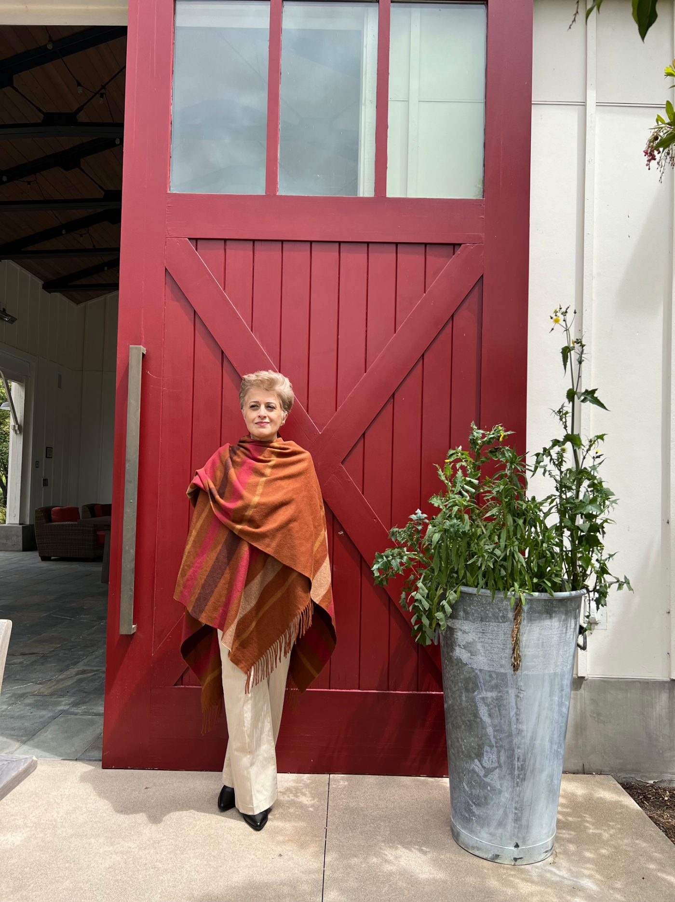
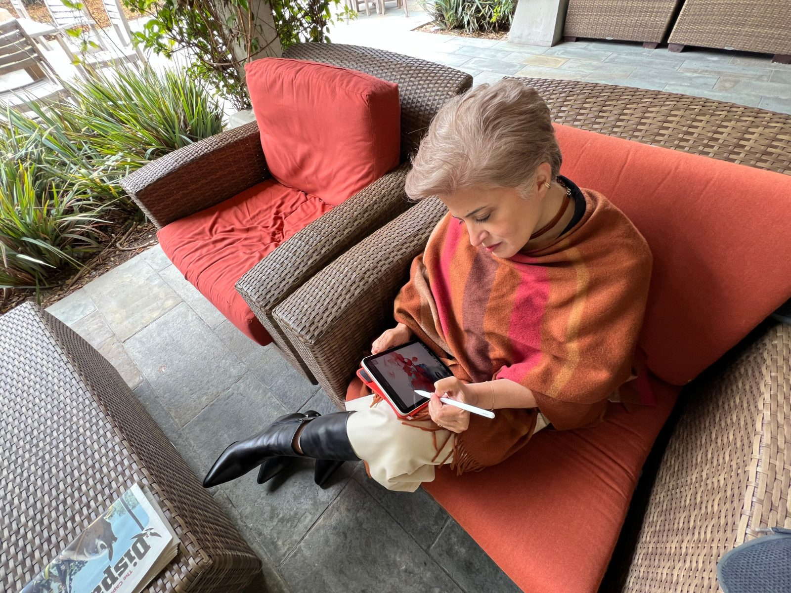

Hi, I'm Aroosha.
I'm living with liver disease, and I share my story so no one else has to navigate it feeling alone. If it reaches even one person sooner, it's worth telling again.

"Fatty liver" sounded manageable. It wasn't.
When I was first diagnosed with nonalcoholic fatty liver disease, I didn't realize how much my life was about to change. At the time, "fatty liver" sounded like a manageable inconvenience, something I could address without too much effort. But as my condition progressed to liver fibrosis stage 3, I faced a reality I wasn't prepared for: advanced liver scarring, an uncertain future, and a deep sense of isolation.
It wasn't just the physical symptoms, like nausea or abdominal tenderness, that challenged me; it was the emotional weight of not knowing what came next. I had no idea that millions of people around the world lived with similar conditions, or that liver disease could strike anyone, even without alcohol as a factor. I felt like I was navigating this complex, often misunderstood disease on my own.
Sharing my experiences would be worthwhile if it made even one person feel less alone.
Turning a private battle into a shared mission.
But then something shifted. I realized that my story, my fears, struggles, and small victories, could mean something to others. It would be worth it if sharing my experiences could help even one person feel less alone, or empower them to take charge of their health.
This space is a reflection of that mission. It's not just about my story; it's about building awareness, fostering community, and sharing practical tools and insights to support others on their journey. Whether you've been diagnosed with NASH, are caring for someone with liver disease, or are simply here to learn, I hope you find connection, hope, and inspiration here.

To end the silence
Liver disease hides. The more of us who speak openly, the sooner others get answers.
To humanize the data
Behind every statistic is a person with a family, a job, and a future worth protecting.
To offer a hand
No one should feel alone at diagnosis. I share so the road ahead feels a little less frightening.
You are not alone in this.
If my story resonates, whether you are newly diagnosed, caring for someone, or simply want to understand more, I would love to hear from you.